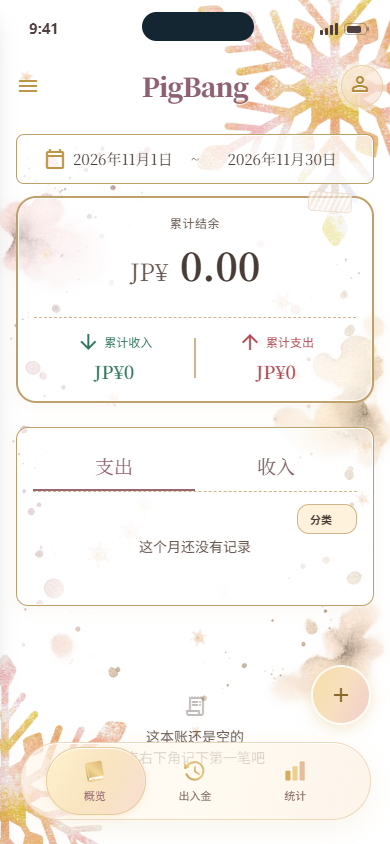
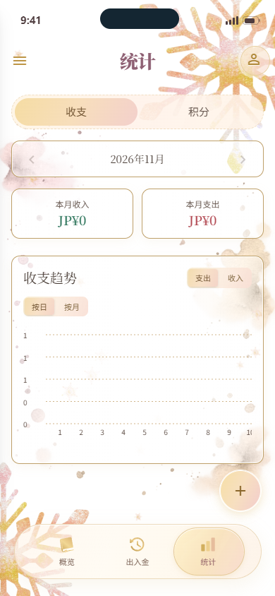

<!doctype html><html lang="zh-CN"><meta charset="utf-8"><meta name="viewport" content="width=device-width,initial-scale=1"><title>暖金 · 雪花周围留白</title><style>body{margin:0;padding:24px 16px;background:#F8F8F8;color:#333;font:15px/1.6 system-ui}main{max-width:830px;margin:auto}h1{font-size:22px;margin:0 0 20px}.pages{display:grid;grid-template-columns:repeat(2,minmax(0,1fr));gap:24px}figure{margin:0}figcaption{margin-bottom:10px}img{display:block;max-width:390px;width:100%;height:auto}footer{margin-top:20px}a{color:#657180}@media(max-width:740px){.pages{grid-template-columns:1fr}figure{max-width:390px;margin:auto}}</style><main><h1>暖金 · 雪花周围留白</h1><div class="pages"><figure><figcaption>首页</figcaption><a href="clearance-home.png"></a></figure><figure><figcaption>统计页</figcaption><a href="clearance-stats.png"></a></figure></div><footer><a href="composition.json">图层与避让范围清单</a><p>空账本实际页面预览；状态栏和安全区为展示模拟。</p></footer></main></html>